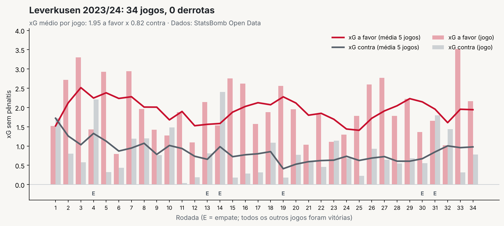
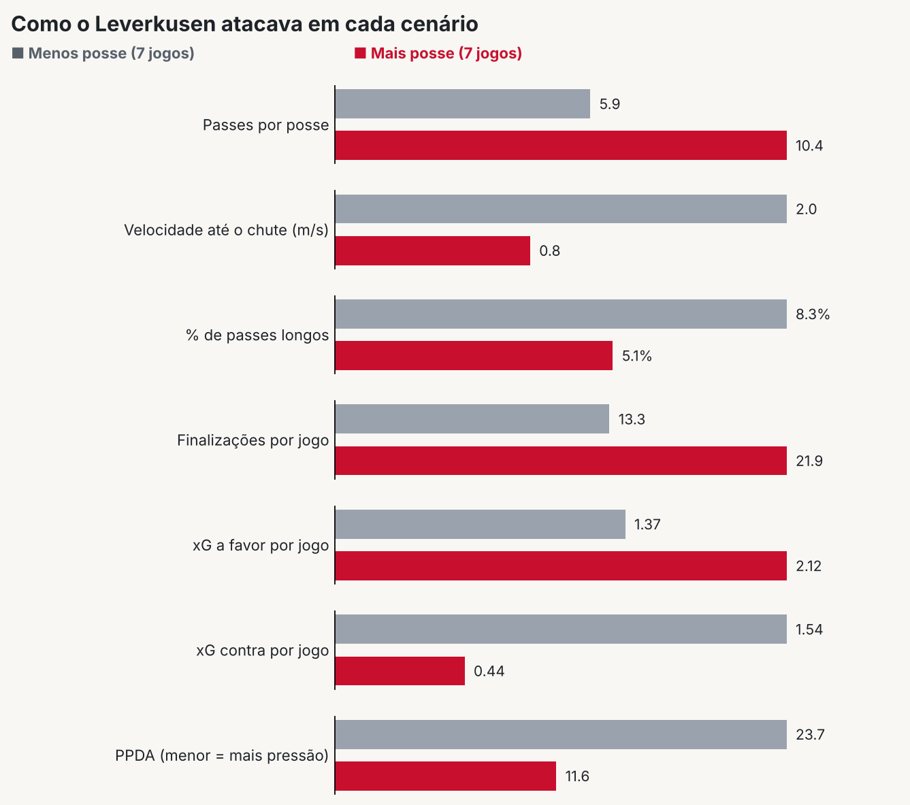
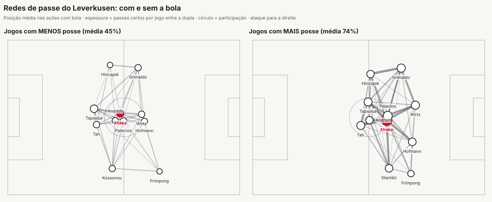
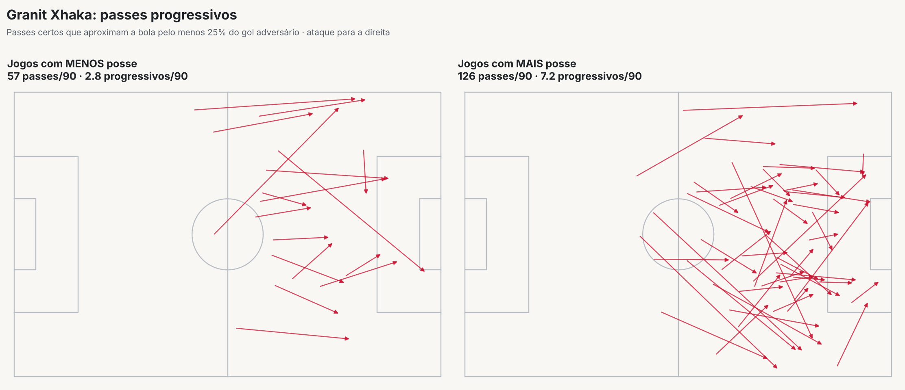
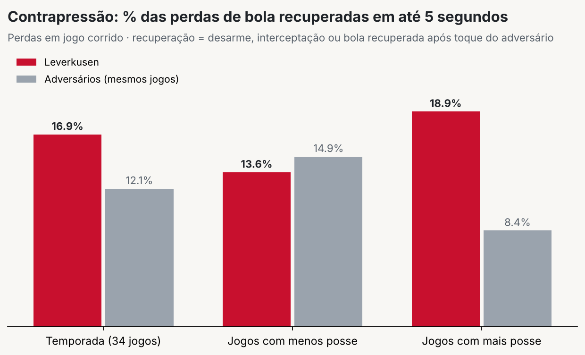
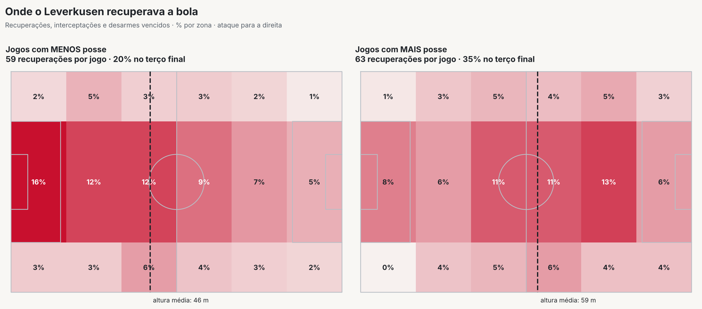
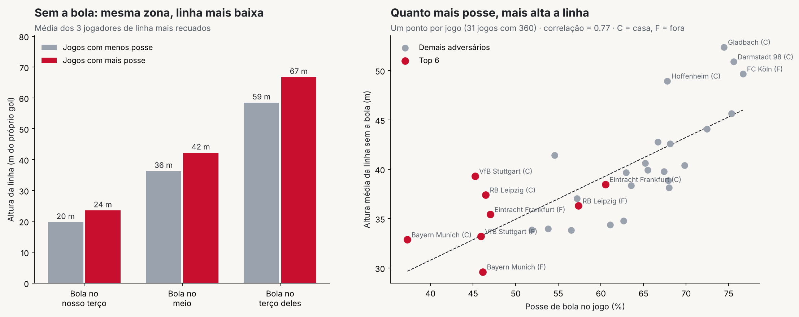
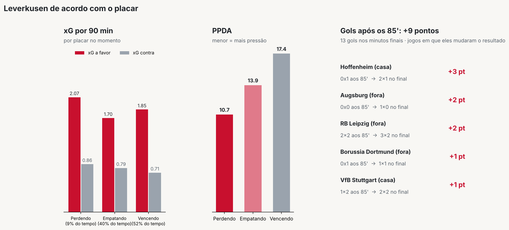

Análise tática: Bayer Leverkusen 2023/24
Como o time de Xabi Alonso terminou a Bundesliga invicto, com dados de evento e 360 da StatsBomb
Resumo. O Leverkusen campeão invicto tinha dois modos de jogo. Contra a maioria dos adversários, dominava: posse alta, linha adiantada, pressão e contrapressão fortes. Contra os grandes, abria mão da bola, recuava a linha 6 a 8 metros e atacava de forma direta. Nesses jogos o time foi superado em xG, e a invencibilidade dependeu de eficiência e de gols nos minutos finais, que valeram 9 pontos.
28V 6E 0D90 pontos em 34 jogos
1,95 x 0,82xG por jogo, a favor x contra
61%posse média
9%do tempo perdendo no placar
Dados e método
- Fonte: StatsBomb Open Data, com os 34 jogos do Leverkusen na Bundesliga 2023/24.
- Eventos: cerca de 81 mil ações do Leverkusen (passes, conduções, pressões, desarmes, finalizações) com coordenadas.
- 360 (freeze frame): posição dos jogadores visíveis na transmissão a cada evento. Está disponível e consistente em 31 dos 34 jogos (os dois contra o Dortmund e o jogo em casa contra o Wolfsburg ficaram fora das análises de posicionamento).
- Comparação: o Open Data só tem os jogos do Leverkusen, não a liga inteira. Por isso o Leverkusen é comparado com os adversários nos mesmos jogos, e com ele mesmo em cenários diferentes.
Para comparar cenários, separei os 7 jogos com menos posse (média de 45%, todos contra o Top 6: Bayern 2x, Stuttgart 2x, Leipzig, Frankfurt e Dortmund) e os 7 jogos com mais posse (média de 74%).
A temporada

O domínio foi consistente ao longo do ano: o xG a favor ficou sempre acima do xG contra na média móvel de 5 jogos. Dos 6 empates, 5 foram contra o Top 6 (Dortmund e Stuttgart duas vezes, Bayern uma), exatamente onde o xG contra sobe. O outro foi o 0 x 0 com o Gladbach.
1. Com a bola: dois times diferentes

Com pouca posse, o Leverkusen era direto: 5,9 passes por posse, ataques 2,5 vezes mais rápidos até a finalização (2,0 m/s contra 0,8 m/s) e mais bolas longas. Com muita posse, era paciente, com 10,4 passes por posse e 22 finalizações por jogo.
O dado mais importante está no meio do gráfico: nos jogos com menos posse, o Leverkusen criou 1,37 de xG e cedeu 1,54. Mesmo assim não perdeu nenhum desses 7 jogos (3 vitórias e 4 empates).

Com a bola, a linha de três zagueiros sobe até o meio-campo e os alas (Grimaldo e Frimpong) jogam como pontas. A conexão mais forte é o lado esquerdo: Hincapié, Grimaldo e Wirtz. Com menos posse, o time fica mais curto e mais recuado, com o meio-campo concentrado perto do círculo central.
O papel de Granit Xhaka

Xhaka era o termômetro do time. Nos jogos de domínio, chegou a 126 passes por 90 minutos (15% de todos os passes do Leverkusen), com 7,2 passes progressivos por 90, jogando cerca de 10 metros mais à frente. Contra os grandes, cai para 57 passes e 2,8 progressivos, e os poucos passes para frente viram inversões longas para os alas.
2. Sem a bola: pressão sob medida

Na temporada, o Leverkusen recuperou 16,9% das bolas perdidas em até 5 segundos, contra 12,1% dos adversários, e foi melhor nesse indicador em 24 dos 34 jogos. Nos jogos de domínio a diferença é enorme (18,9% contra 8,4%). Contra os grandes ela some e se inverte: 13,6% contra 14,9%.

O mesmo padrão aparece em onde o time recuperava a bola. Nos jogos de domínio, a recuperação média acontecia a 59 metros do próprio gol, com 35% das bolas ganhas no terço final. Contra os grandes, a altura média cai para 46 metros, e a zona com mais recuperações passa a ser a própria área.
3. A forma do time: a altura da linha (360)

Com os dados 360, medi a distância ao próprio gol dos 3 jogadores de linha mais recuados do Leverkusen em mais de 71 mil lances.
A pergunta-chave é se a linha baixa contra os grandes era escolha ou só consequência de ter menos a bola. Comparando lances com a bola na mesma zona do campo, a linha ficava 6 a 8 metros mais baixa nos jogos com menos posse (59 m contra 67 m com a bola no campo de ataque). Ou seja, o recuo era deliberado. Entre os jogos, a correlação entre posse e altura da linha sem a bola é de 0,77, e as duas linhas mais baixas da temporada foram contra o Bayern.
4. O placar e os minutos finais

- O Leverkusen ficou perdendo só 9% do tempo na temporada.
- Perdendo, pressionava como nunca (PPDA de 10,7) e criava mais (2,07 de xG por 90). Vencendo, aliviava a pressão (PPDA de 17,4) e controlava o jogo, cedendo o menor xG.
- Contra o Top 6, o momento mais perigoso era o empate: o time cedia mais xG do que criava (1,43 contra 1,34 por 90).
- 13 gols depois dos 85 minutos valeram 9 pontos, e em 5 jogos mudaram o resultado. Sem eles o time teria 81 pontos e três derrotas (Hoffenheim, Dortmund fora e Stuttgart em casa), mas ainda seria campeão com folga sobre o Stuttgart (73).
Conclusões
- Dois modos de jogo. Contra a maioria, domínio: posse, linha alta, pressão e contrapressão. Contra os grandes, um bloco médio-baixo com ataques diretos.
- A mudança era intencional. A linha ficava mais baixa mesmo com a bola na mesma zona do campo, e a pressão se ajustava ao adversário e ao placar.
- Invicto, mas não imbatível. Nos jogos contra os grandes, o adversário criou mais. A campanha perfeita dependeu também de eficiência e da força mental para decidir nos minutos finais.
Limitações
- O Open Data só tem os jogos do Leverkusen: não dá para comparar com a média da liga, apenas com os adversários nos mesmos jogos.
- O 360 mostra só os jogadores visíveis na transmissão. As medidas de forma usam apenas lances com pelo menos 8 jogadores do Leverkusen visíveis, e 3 jogos ficaram de fora por inconsistência dos arquivos.
- “Menos posse” e “adversário forte” aconteceram nos mesmos jogos. Parte das diferenças vem do adversário, e não só de uma escolha do Leverkusen.
- O PPDA usa desarmes, interceptações, faltas e duelos perdidos como ações defensivas. Os valores não são diretamente comparáveis com os de outros provedores.
Código e dados: github.com/andrecasemiro28/leverkusen-analise-tatica · Outros projetos: Modelo de xG · Scouting por similaridade
Dados: StatsBomb Open Data, de uso não comercial e com atribuição.